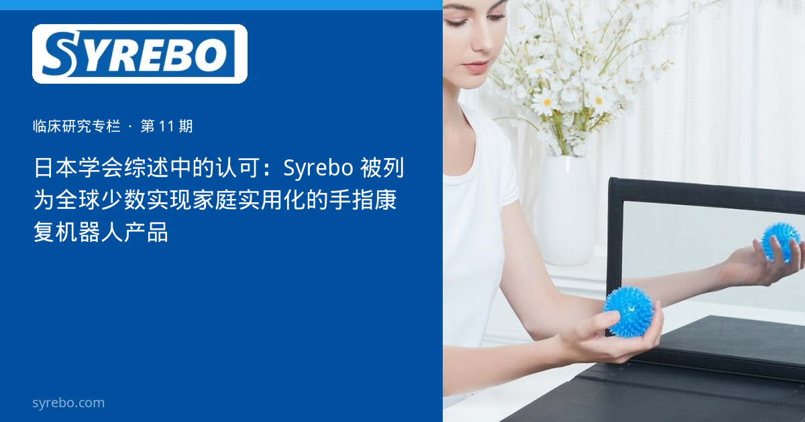

Syrebo 临床研究专栏
循证 · 康复机器人手套临床研究解读
文献摘录
在宅利用を想定した片麻痺手指リハビリロボットにおける医療者との連携と開発
古館裕大、千葉馨、石田裕二、三上貞芳
日本ロボット学会誌, 2023; 41(4)
DOI: 10.7210/jrsj.41.331


居家手康复说了很多年，真正写进学会论文的产品化例子仍然少。2023 年《日本机器人学会誌》刊登古館裕大等人的文章，主题是面向居家使用的片麻痺手指康复机器人，以及开发过程中如何与医疗人员协作。作者在论述中指出，已实现产品化的案例很少，并把 Syrebo 手功能康复手套列为其中的例子。这是一篇开发与协作的记述，不是疗效试验。
从病房到家庭，中间差的是穿脱、安全边界和没有治疗师在场时的使用。工程论文会把这些约束写在与临床人员的协作里。被点名，说明作者在举例时想到了这一产品，不等于学会完成了一项对照研究。
“少数已经产品化”同时是一种限制：作者强调这类例子仍然少。读成“居家康复已经普遍实现”，会把举例写成流行病学结论。
该文没有刊出手套照片。专栏所用的手套与主机图片来自 Sharma 等人 2024 年《Cureus》病例报告的图 2（CC BY 4.0），已在图注中说明，不能当作日本机器人学会这篇论文的原图。
研究设计
学会期刊上的开发记述，讨论居家场景下的手指康复机器人，以及与医疗人员的协作。没有随机分组，没有功能量表的组间比较。
样本与周期
不适用临床样本量。文章评论的是产品化路径，而不是一批患者的结局。
核心结果
论文的表述是：面向家庭、已经产品化的手指康复机器人仍然少，Syrebo 是被提到的例子之一。本专栏按这个范围引用，不把它改写成疗效、市场排名或“患者在家一定能完成训练”。
这篇记述的价值，是把居家使用写成一个需要和医疗人员一起定义的工程问题。产品化例子的存在，只说明有设备走完了从样机到产品的一步。
家庭里能否安全、持续地使用，仍然要看适应证、监督和单独的临床研究。学会论文没有提供这些数据。
研究边界 不是针对 Syrebo 的临床试验。原文强调产品化案例仍少。配图来自另一篇开放获取病例报告。